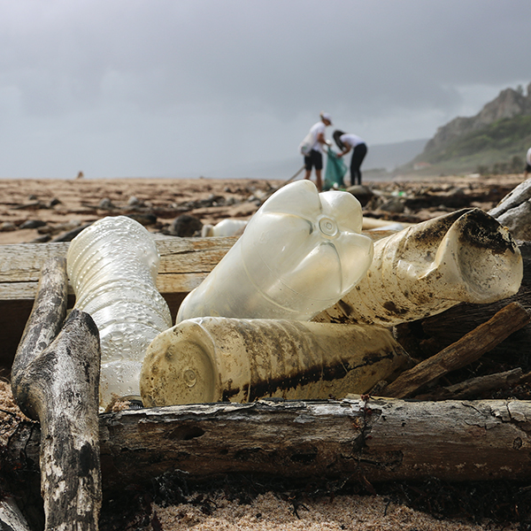
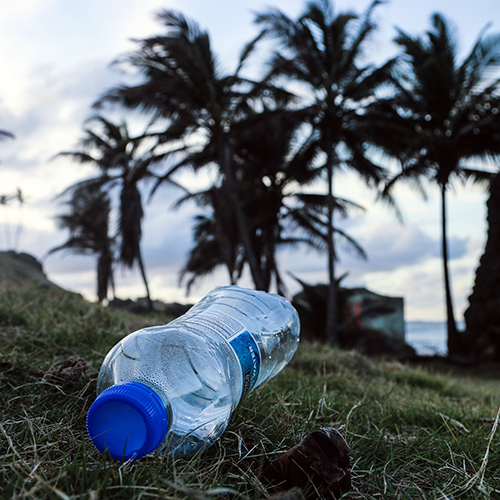
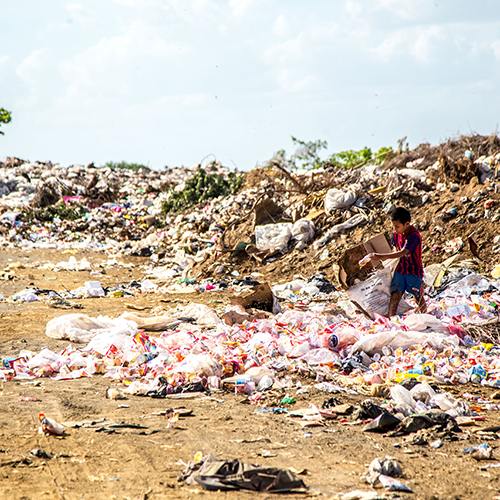
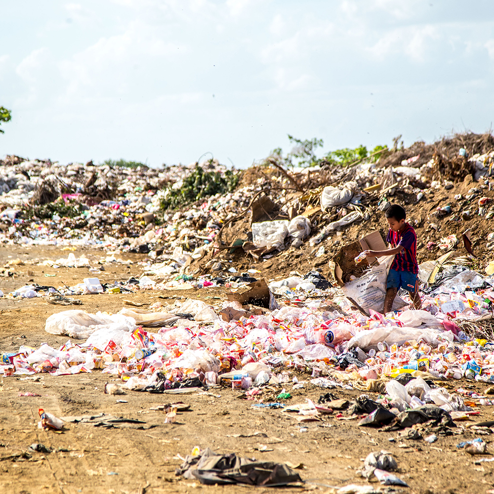
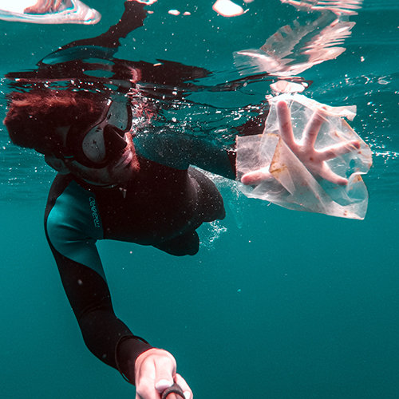
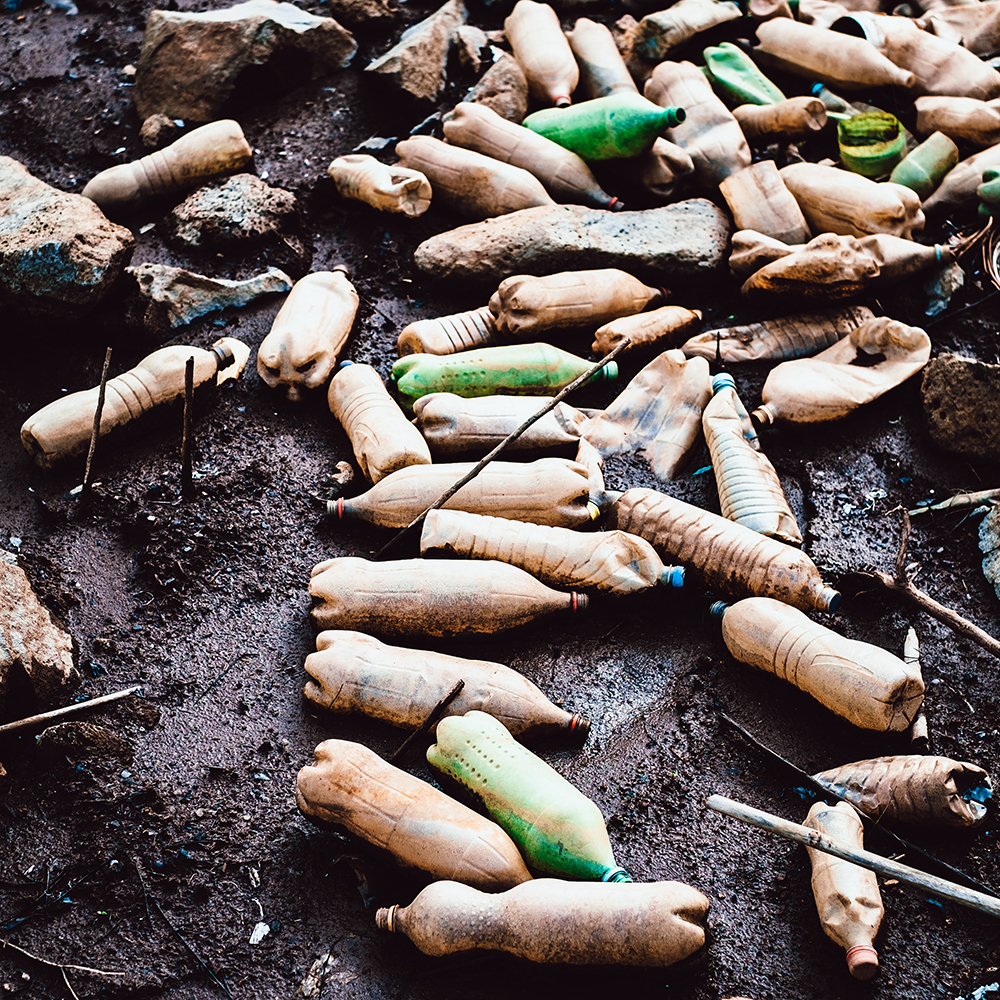
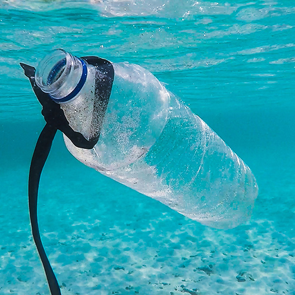
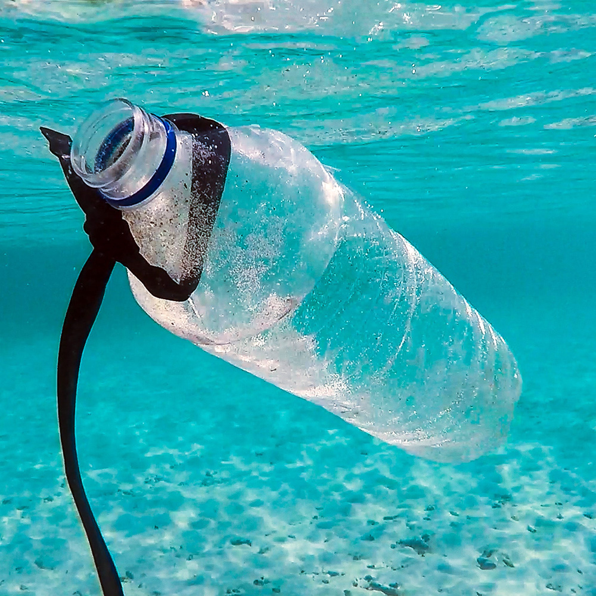

refuse
disposable plastic whenever and wherever possible. No matter if you are at the grocery store or the bar you love around the corner. Say no do straws and use your own containers instead of plastic packaging.
reuse
durable, utensils, your own containers, bottles, bags, and other everyday items made out of plastic. Rather choose glass, paper, stainless steel, bamboo or wood instead of plastic.
reduce
goods if it will leave behind plastic trash. Just don’t buy it. Check out the local store next to you, their products are fresher, better and tastier anyway. And there you go: your plastic footprint just shrank a little.
recycle
When you can’t refuse, reduce or reuse. Just by paying attention to the entire life cycle of items you’ve bought is the proof that you’re on the right way.
frankly speaking
Our love affair with plastic is taking a huge environmental toll. Coastline are filled with bottles. Animals choking on different bits of plastic. More plastic than fish in our waters. Let’s all be game changers now. If we all step up against plastic pollution there will be a change visible soon. Just in case there are still some people not „too sure“ about this crisis, we gathered a few outstandingly shocking images.
- 
- 
-  
- 
- 
-  